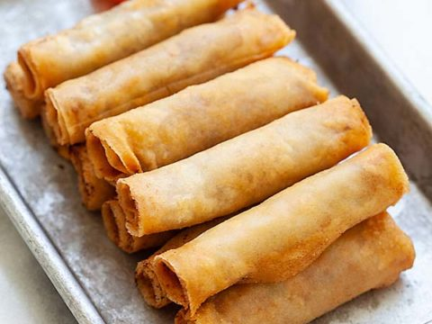

Lumpia Shanghai

Lumpia, the perfect holiday, get together, and potluck food!
Lumpia Shanghai is one of my favorites! It's my go-to-bring-to-potluck food and it's always a hit!
Ingredients:
- Eggroll wrapper
- Ground pork
- Egg
- Carrot minced>
- Celere minced>
- Soy sauce
- Garlic powder
- Minced Onions
- Salt and pepper to taste
Procedure:
- Combine ground pork, salt, pepper, garlic powder, minced onion, cracked egg,
celere and minced carrot in a bowl. Mix well using your hands.
Make sure to wash your hands or wear gloves that are latex free and BPA free.
- Lay a piece of eggroll wrapper flat on a plate or chopping board
Adjust the orientation of the wrapper by rortating the plate
so that one side points upward while the rest of the sides are pointing down, left, and right.
Scoop 1.5 to 2 tablespoons of meat mixture and place it at one side of the wrapper.
Shape the meat unto a cylinder. Fold the pointed side of the wrapper towards the pork mixture
and the roll inwards by 1 to 2 inches. Fold the top and bottom ends inward and then continue
to roll the wrapper unti lthe mixture is completely wrapped. Seal by rubbing water using your
finger on the right end of the wrapper and press it gently against the rolled lumpia.
perform this step with the remaining ingredients.
- Heat the oil i na small pot.
- Deep fry the lumpia in batches of 4-6 peices in medium hear for 10 minutes
or until the wrapper turns light to golden brown.
- Serve with sweet and sour sauce. Happy eating!
Return to Homepage